Actualités
Association RETABLES de FLANDRE
Calendrier des visites — été 2026
Le programme des visites d'églises à retables pour l'été 2026 est disponible.
Télécharger le calendrier 2026Assemblée Générale 2026 à Looberghe
Samedi 7 mars 2026
L'Assemblée Générale de l'Association des Retables de Flandre s'est tenue le samedi 7 mars 2026 à Looberghe.
Après une visite de l'église et la tenue de l'assemblée générale ordinaire, un nouveau Conseil d'Administration a été élu le 17 mars 2026.
Lundi 2 février 2026
À 18h, une messe a été célébrée par le Père Thomas Vercoutre en l'église Saint-Jean-Baptiste d'Oudezeele.
La célébration a été accompagnée de chants grégoriens interprétés par la chorale Cum Jubilo de Watou, suivie d'une dégustation de crêpes de la Chandeleur.
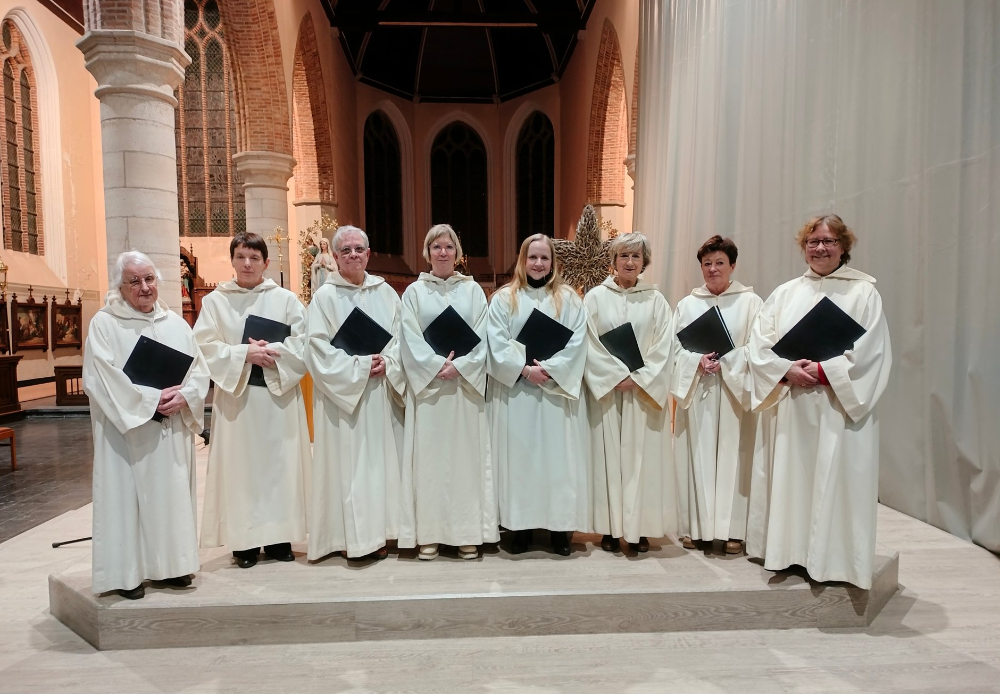
Chorale Cum Jubilo - Watou
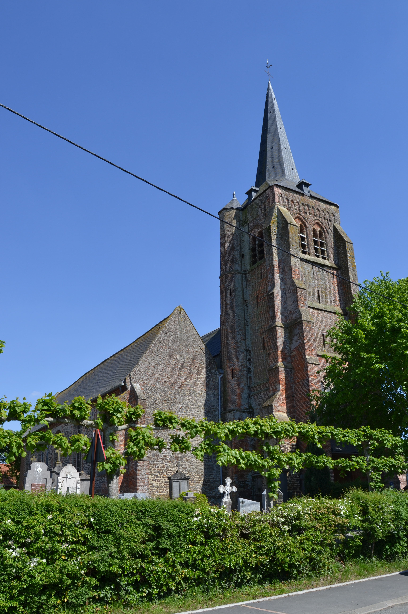
Église d'Oudezeele
Formation des guides 2025–2026
Octobre 2025 – Février 2026
Une nouvelle session de formation des guides de l'association a réuni neuf futurs guides et douze guides expérimentés venus approfondir leurs connaissances, sur le territoire de Dunkerque et Hazebrouck.
Voir le programme de formation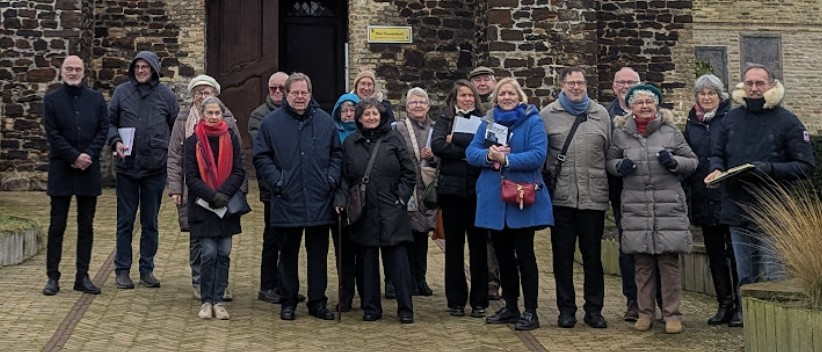
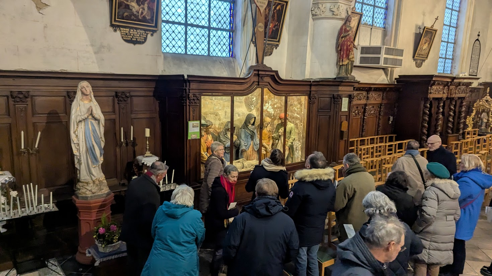
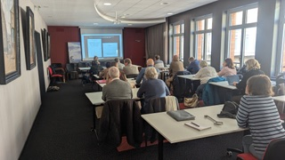
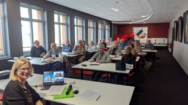
Témoignage — Obsèques de Paulette VANPOULLE
Lors des obsèques de Paulette VANPOULLE, l'Association des Retables de Flandre a tenu à rendre hommage à son engagement et à son attachement au patrimoine flamand. Ce témoignage a été porté par Régine Beaucamp, présidente de l'association, au nom de l'Association des Retables de Flandre et du Comité Flamand de France.
Lire le témoignage completDécouverte de Steenvoorde et Volckerinckhove
7 septembre 2025
L'église Saint-Pierre de Steenvoorde, avec sa haute flèche de 92 m, et l'église romane de Volckerinckhove, remarquable par ses poutres sculptées et ses fonds baptismaux.
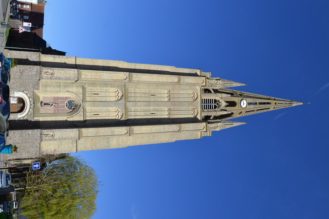
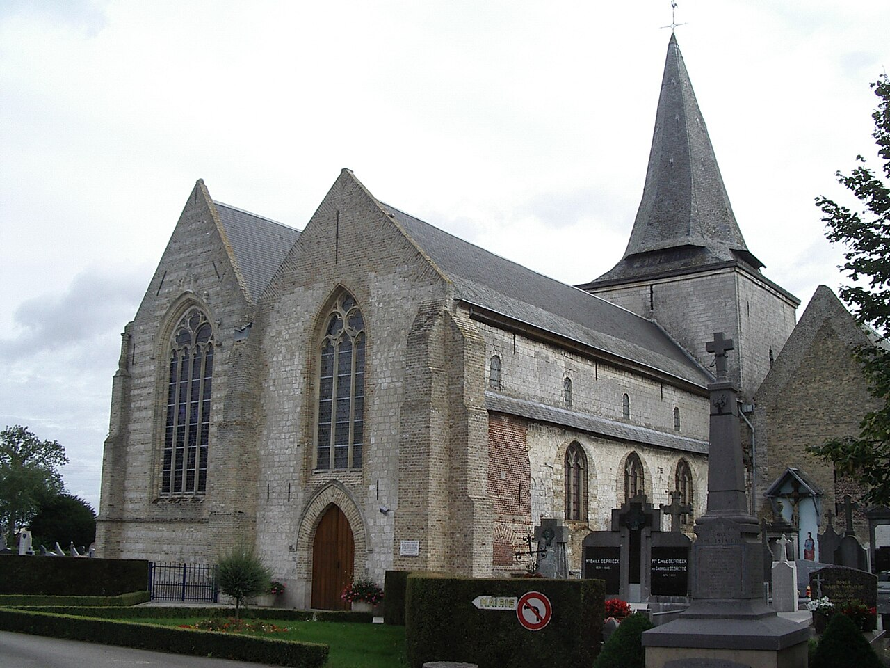
Borre et Cassel
31 août 2025
L'église Saint-Jean-Baptiste de Borre avec sa tour de guet transformée en clocher, et la collégiale Notre-Dame de la Crypte de Cassel, classée monument historique.
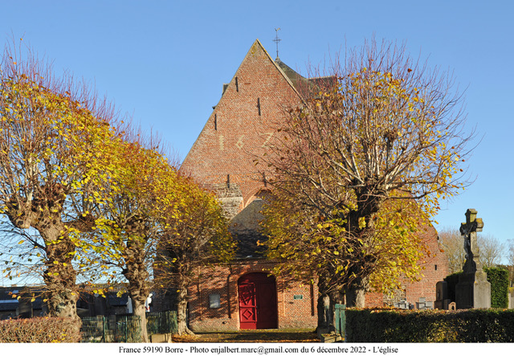
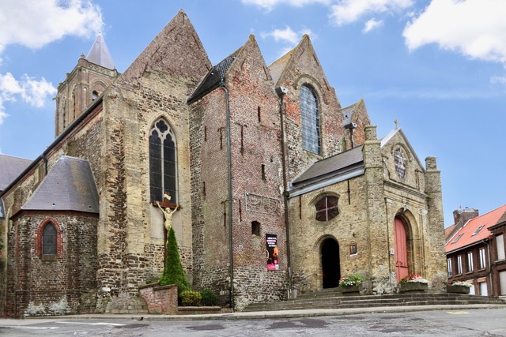
Bollezeele et Killem
24 août 2025
L'église Saint-Wandrille de Bollezeele, monument historique au riche mobilier classé, et l'église Saint-Michel de Killem avec ses retables baroques.
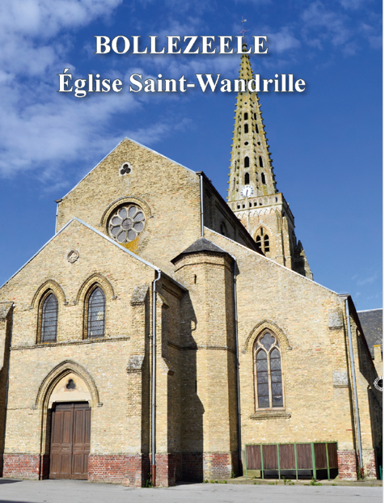
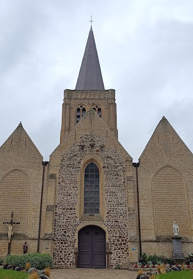
Herzeele et Wulverdinghe
17 août 2025
L'église Notre-Dame de l'Assomption d'Herzeele, église-halle en briques du XVIe siècle avec ses retables classés Monuments Historiques, et l'église Saint-Martin de Wulverdinghe à la façade romane rare en Flandre maritime.
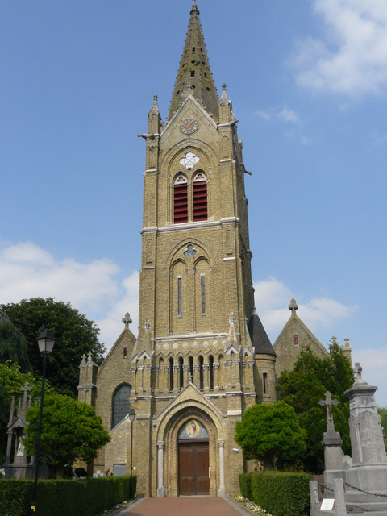
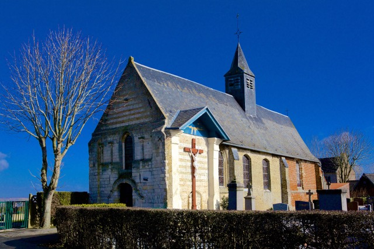
Sortie culturelle à Douai
15 mai 2025
Quarante participants ont découvert Douai lors d'une sortie culturelle.
Accueillis à la collégiale Saint-Pierre par Françoise Baligand, ils ont admiré son architecture classique du XVIIIe siècle, ses œuvres religieuses majeures et les vitraux de Paul Bony. La visite s'est poursuivie au musée de la Chartreuse avec une exposition consacrée au peintre Nicolas-Guy Brenet.
Lire le compte-rendu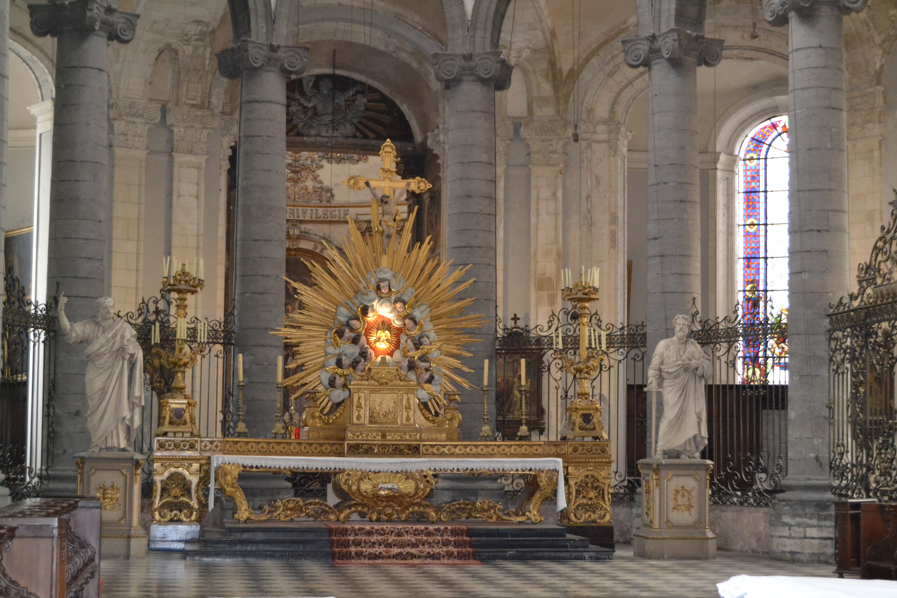
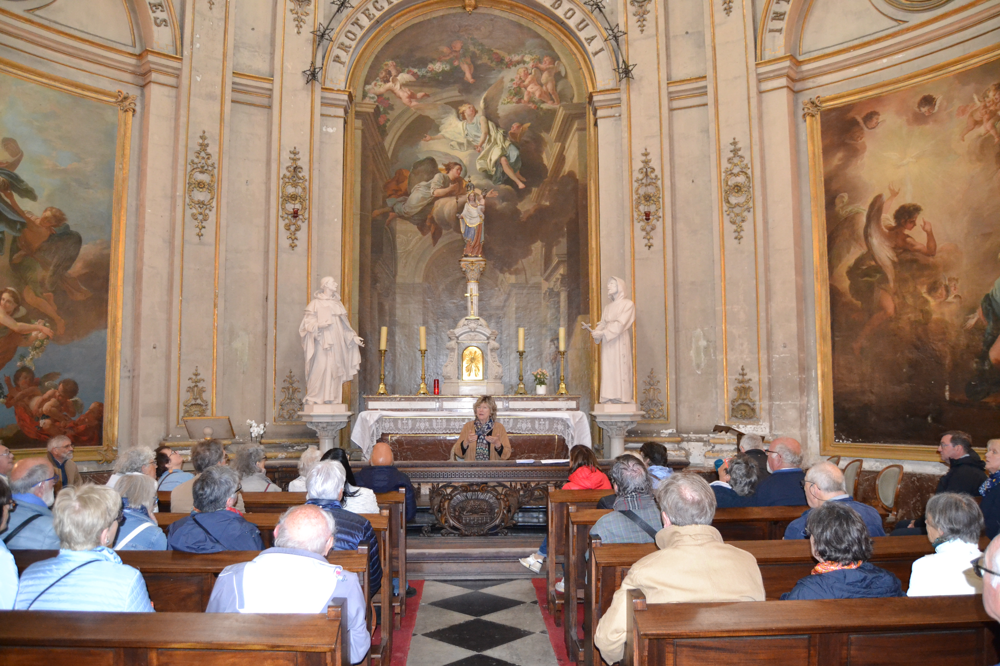

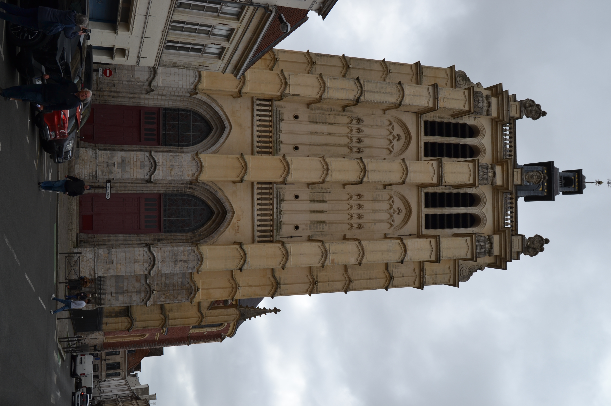
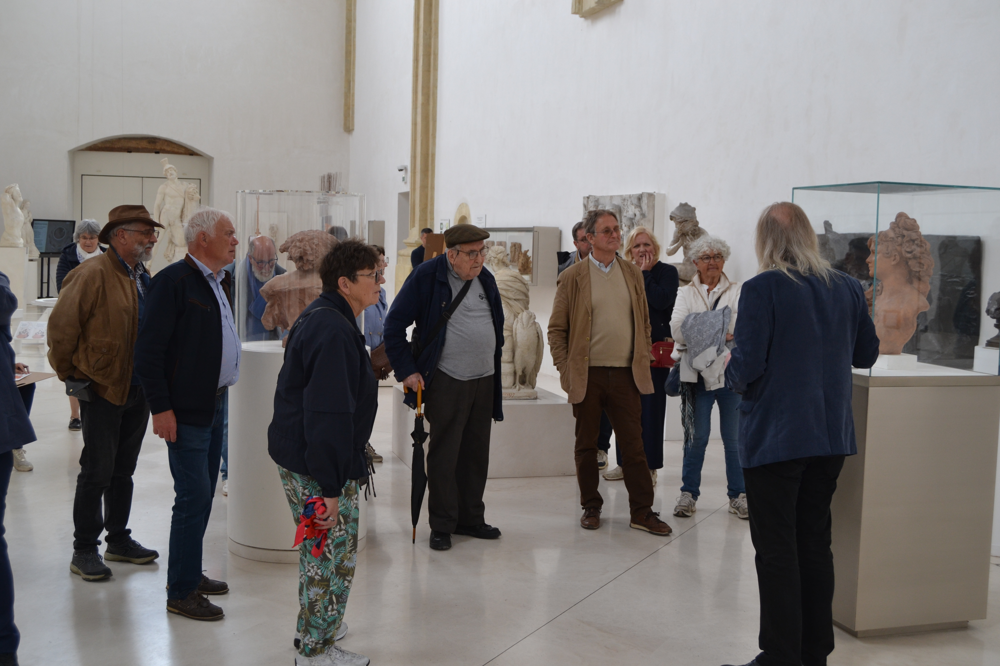
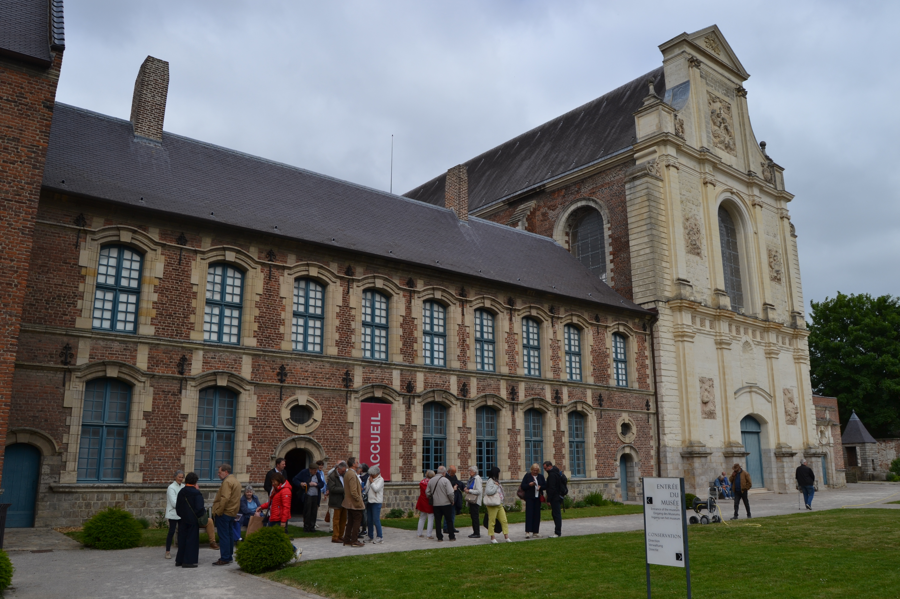
Assemblée Générale 2025 à Boeschèpe
29 mars 2025
L'Assemblée Générale s'est tenue sous la présidence de Régine Beaucamp. Après une visite guidée de l'église Saint-Martin par Réginald Pasquier, le rapport d'activités 2024 et le rapport financier ont été approuvés à l'unanimité. Le renouvellement partiel du conseil a reconduit tous les membres sortants.
Lire le compte-rendu


Rapport d'activités 2024
Depuis l'assemblée générale du 6 avril 2024 à Gravelines, l'association a poursuivi ses actions : réunions du conseil, participation au salon de généalogie à Gravelines, sortie annuelle à Abbeville et présence au forum des associations à Hazebrouck. Les visites estivales ont attiré 470 personnes grâce à l'engagement des guides.
Lire le rapport d'activitéLe décès de José De Broucker
Journaliste français éminent, catholique engagé, auteur de nombreux ouvrages, ami et "disciple" de Don Helder Camara, José de Broucker s'est éteint le lundi 4 octobre 2021, en la fête de saint François d'Assise. Il avait été Président de l'association pendant 15 années de mandat.
Plus d'infoJournée des guides à Hazebrouck
20 octobre 2021
Sur une proposition d'Aïda Tellier, les guides se sont retrouvés à Hazebrouck pour partager un moment de convivialité en visitant divers lieux de la ville. Quelques membres du Conseil d'Administration ont rejoint le groupe.
Lire le compte-rendu